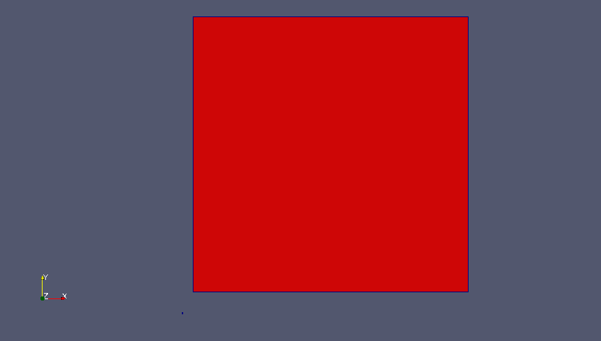
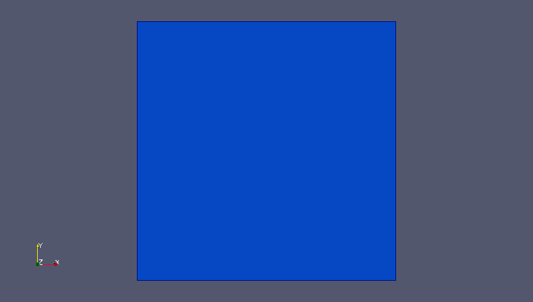

Who is PABLO
PABLO is C++/MPI library for parallel linear octree/quadtree developed by Optimad Engineering srl under the GNU Lesser General Public License. The aim of the project is to provide users with a ready-to-use tool for parallel adaptive grid of quadrilaterals/hexahedra. Message passing paradigm is transparent to the user since MPI calls are embedded in PABLO. By this way, the user can easily perform data communications and dynamic load-balance by calling straightforward high level methods. Moreover, the user can customize his data in whatever way he likes or he can use a simple data structure already available in PABLO.
PABLO allows adaptive mesh refinement by generating non-conforming grid with hanging nodes. One of the main feature of PABLO is the low memory consumption in the basic configuration (approx. 30B per octant in 3D). Additional features available in PABLO are: 2:1 balancing between octants and a easy way to generate and store intersections between octants.
Tutorials
In this section, results obtained by running the examples available in PABLO are presented. For a detailed description of each test case, please refer to tests code available in PABLO. (For technical information about PABLO, please visit Doxygen documentation).
Tutorial Test 0
The first tutorial (available in test0.cpp) is a simple tutorial about instantiation of octree objects. In this example two 2-dimensional class Para_Tree objects are declared using the default constructor and a custom constructor. Class_Para_Tree standard constructor builds a quadtree with just one quadrant with unity edge length and node 0 in axis origin. Class_Para_Tree custom constructor instantiates a quadtree with just one quadrant with edge length provided by the user (equal to 250, in this example) and node 0 with coordinates specified by user (in this example (10,20,0)). PABLO works in a logical domain where the maximum size allowed for a quadrant cannot exceed 2m (m is the maximum refinement level), and minimum size of a quadrant is equal to 1. Therefore, different quadtrees in the physical domain (see first figure), are mapped into the same quadtree in the logical domain (see second figure). Figure below shows both quadtrees in the physical domain. The first quadtree (instantiated with the default constructor) is shown in blue, while the second octree (created by the custom constructor) is depicted in red. Note that the size ratio between both quadrant is 1/250.

Figure below shows both quadtrees in the logical domain. Here both octrees are mapped into the same octree with edge length 2m.

Transformation from logical domain to physical domain must be provided by user within the class Class_Map, although a simple transformation composed of translation and scaling is already available in PABLO. Both quadtrees generated in this tutorial can be saved in both logical and physical coordinates.
Tutorial Test 1
In this tutorial (available in test1.cpp), a quadtree is refined globally one time, and then refined iteratively using two different refinement criteria. At the end of the iterative refinement, one global refinement is performed again. In the first criterion, each octant generated by a previous refinement iteration is marked for further refinement if its center is within a circle with a specified radius. Iterative refinement stops when a fixed number of iteration is reached. In the second criterion, the refinement is performed using the same rules of the first criterion. However, this refinement is performed until the flag returned by the adapt method is true (for further details about adapt method, please visit documentation). Video below illustrates the iterative refinement. Each frame show the result of a refinement iteration starting from the ancestor quadrant up to the last global refinement. The upper part of each frame shows the refinement procedure using the first criterion, while the bottom part shows the refinement procedure using the second criterion. Moreover, in the right hand side of the domain, the 2:1 balancing is deactivated.
Tutorial Test 2
In this tutorial (available in test2.cpp) a quadtree is iteratively refined using a slight modification of the first refinement criterion of Tutorial 1. Here, each octant is marked for further refinement if at least one of its vertices lies within a circle of specified radius. Again the iterative refinement is performed for a specified number of iterations. Video below shows the refinement procedure. Using the present criterion the geometry is captured better than in tutorial 1.
Tutorial Test 3
This tutorial (available in test3.cpp) starts from the result of tutorial 2, and shows the use of the method adapt for coarsening. In this example, a global coarsening iteration is performed, followed by an iterative coarsening of each quadrant within a smaller circle inside the original geometry. The coarsening procedure is repeated 5 times and the 2:1 balancing option is de-activated.
Tutorial Test 4
This tutorial (available in test4.cpp) shows how to use PABLO's methods to find neighboring quadrants of a specified element. Neighbors search can be performed through faces, edges and nodes (in 2D case, only edges and nodes). In this example a quadtree is refined four times and then a set of data is assigned to the mesh using STL vectors. More specifically, an integer equal to 1 is assigned uniformly to all quadrants within a circle, and 0 to the remaining quadrants. In this example neighbor-search is used to perform a simple moving-average-smoothing procedure of the data. Video below shows the time-evolution of data over 25 smoothing iterations.
Note that in test4.cpp, vectors for ghost cells (and related data) are also introduced. This is required by the parallel nature of methods implementation in PABLO, even though such vectors are never used on serial-runs like the present one.
Tutorial Test 5
This tutorial (available in test5.cpp) shows how to use PABLO for adaptive mesh refinement with data associated to the mesh. A set of data (value 0 assigned to all quadrants outside a circle, and value equal to the distance from circle's center assigned to all quadrants within the circle) is linked to a uniform quadtree of level 5. Quadrants within the left half of the circle are marked for refinement, while quadrants in the right half for coarsening. Data are mapped onto the mesh after refinement following these rules: the value of a father is inherited by its children (in case of refinement); the average sum of values of the four children is assigned to the father (in case of coarsening). Data injection can be achieved after adaptation using an auxiliary mapper provided by an overloaded version of the adapt method. This mapper links the grid before and after adaptation. Video above shows the results after two steps of refinement/coarsening with data injection over the new grid.
Tutorial Test 12
The example in test12.cpp is the parallel version of test2.cpp. Here one quadtree is instantiated in the same way on every process. Therefore, each process refines globally the initial quadrant 3 times. Till this moment, there's no parallel paradigm in action, actually the code is replicated on every process. At this point a load-balance method call is performed and the grid is partitioned and distributed among the processes of the world communicator. From now on, each process owns one portion of the grid. The test continues as in tutorial 2, but after every refinement a load-balance call is introduced to keep the computational burden well distributed. In the following video each frame shows the mesh and the processor partitions after every refinement. Different partitions are represented with different colors. The test has been performed using 4 processes.
Tutorial Test 13
Test 3 is proposed here in its parallel version. The load-balancing is performed after each step of grid adapting, as in test 12. In the following video, remark how loosing the symmetry in the mesh affects the symmetry of the process partition.
Tutorial Test 14
The example in test14.cpp is the parallel version of test4.cpp. In order to perform the smoothing procedure in parallel, ghost elements and data communications towards them are needed. Now ghost quadrants and ghost data are not only instantiated, as in test 4, but actually used to perform smoothing across processor borders.
In the previous video, every frame shows one of the 25 smoothing steps. Four processes have been used for this run.
Tutorial Test 15
This test is the parallel version of test5.cpp. Here the main focus is on the load-balance of both grid (as in test13.cpp) and data. The grid is refined several times together with the data and their inheritance follows the same rules like in test 5. Until the last refinement no parallel paradigm is in action: every process owns the entire grid. After this refinement, the load-balance with data is introduced, giving as result a parallel distribution of grid (as in test13.cpp) and data.
In the video above data are represented with colors in cell, while the process partition is highlighted coloring the cell edges.
Tutorial Test 16
Test 15 is here enriched by an additional feature. The load-balance is performed by keep a family of desired level together on the same process. In particular in this example (see test16.cpp) the families, containing elements from the maximum level reached in the quadtree to that level minus 3, are kept on the same partition. The video below show the obtained result.
Compare the last frame of this video with the last frame of video of Test 15 to understand the difference between the achieved partitions with and without the "compact families" feature.
Tutorial Test 104
In this example the same smoothing procedure of test 4 are repeated for a three-dimensional octree, by simply substituting the specialization parameter in the declaration of the octree object. Moreover, since we are now in three dimensions, a loop over the faces during the neighbour search is performed.
Tutorial Test 116
The load-balance example with data and "compact families" in test 6 is here rerun for a three-dimensional octree mesh. In the following video the evolution during mesh generation and partitioning is shown.
Tutorial Test 120
In this example an Adaptive Mesh Refinement (AMR) around a moving sphere is performed. In the following videos the evolution of the partitioning (6 processes) and mesh adaptation during the motion of the sphere are shown.
Tutorial Test Bubbles
In this example an Adaptive Mesh Refinement (AMR) for tracking moving bubbles in 2D is performed. In the following video the evolution of the partitioning (8 processes) and mesh adaptation during bubbles motion are displayed.
Tutorial Test Bubbles 3D
In this example an Adaptive Mesh Refinement (AMR) for tracking moving bubbles in 3D is performed (8 processes). In the following video the mesh adaptation and the bubbles evolution are shown.